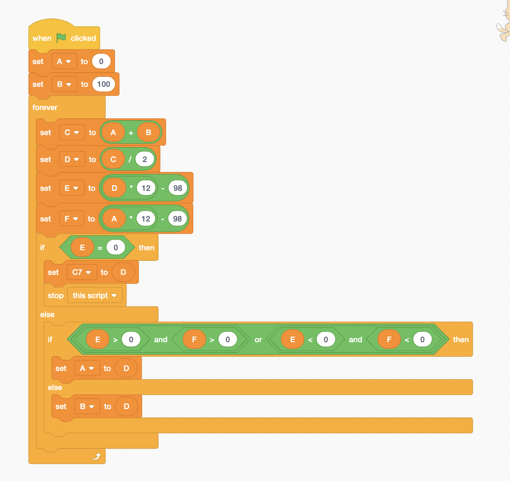

Overview
Intro to programming
Task Description: The goal of this task was to practice coding by building programs that draw different shapes and patterns.
Design Choices: My design choices for this task was making the colors change constantly to intrigue the audience.
Learning Outcomes: I learned about loops, basic functions in scratch, control statements, and gained initial understanding of algorithms.
Tip: Interact with this project using the link at the bottom of the page.
Pc Build
Task Description: The goal of this task was to learn the key componets of computer hardware, it's fuctions and ultimately diagonse what parts of the computer went wrong.
Design Choices: For this task, I chose the cheepest parts that will run cyberpunk 2077 at a decent fps.
Learning Outcomes: I learned about different computer parts. For example, the CPU, GPU, RAM, and their functions.
Tip: Click on the image to visit the pc part picker website.

PB&J Pseudocode
Task Description: The goal of this class activity was to learn pseudocode through describing the instructions of making a PB&J sandwich.
Design Choices: For this task, I tried to be as detailed as possible, almost as if I am instructing an alien how to make a PB&J sandwich.
Learning Outcomes: I learned how to write basic pseudocode and the importance of being detailed and clear when writing code.
- Open the bag of bread from the opening end
- Take out two pieces of bread from the bag and put it on the plate
- Put the bag to the side
- Put the two pieces of bread separated on the plate
- Take the jelly can and twist lid until it opens
- Put the lid on the side
- hold the non-sharp end of the knife
- Stick the sharp end of the knife in to the opening of the jelly can
- Gather a spoonful size of jelly on the blade side of the knife
- >Move the knife on to one of the bread, while balancing the jelly on the knife
- Tilt the knife so the jam drops on the bread
- Spread the jam evenly with the knife so 80% of the bread is covered with jelly
- Lay knife down beside the plate
- >Take the jelly can lid
- Match lid with jelly can opening
- Twist until close
- Take a tissue
- Grab the knife using the non-sharp end
- Match sharp end of the knife to the tissue
- Wipe the knife by rubbing both side of the sharp end of the knife using the wipe
- After the knife is clean without jelly set knife and tissue separately aside
- Take the butter can and twist lid until it opens
- Put the lid on the side
- hold the non-sharp end of the knife
- Stick the sharp end of the knife in to the opening of the pbutter can
- Gather a spoonful size of pbutter on the blade side of the knife
- Move the knife on to the bread without jelly, while balancing the butter on the knife
- Tilt the knife so the pbutter drops on the bread
- >Spread the butter evenly with the knife so 80% of the bread is covered with butter
- Lay knife down beside the plate
- Take the butter can lid
- Match lid with butter can opening
- Twist until close
- Take the butter spread bread
- Put it on top of the jelly spread bread
Implementing Algorithms
Task Description: The goal of this class activity was to focuse on algorithms and boolean functions.
Design Choices: There wasn't much aesthetic design choices for this activity, but on the coding side I tried to make my logic as simple as possible, so I divided varibles for each question.
Learning Outcomes: I learned how to use boolean functions and loops, which helped me a lot in my Simonsays project.
Tip: Interact with this project using the link at the bottom of the page.
Code Snippet
Tip: View my Code snippets and interactive Scratch projects, use the links below.

Simonsays Project

Back to Projects or check out the Gaming Corner